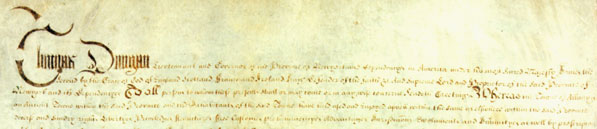
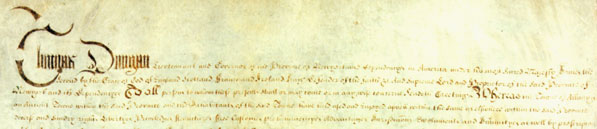

by
Stefan Bielinski
The community called Albany was granted a municipal charter by Governor Thomas Dongan on July 22, 1686. Almost identical in form to the charter awarded to New York City just three months earlier, the Albany charter was the result of the agency of and negotiations conducted with Dongan and his advisors by Albany representatives Robert Livingston and Pieter Schuyler.
 

The so-called "Dongan Charter" gave the Albany fur traders a number of unique rights and responsibilities that were primarily responsible for the growth and development of an early American city in the center of a large and emerging agricultural region.
First, the charter incorporated the city of Albany - legally establishing a separate municipal entity in the heart of Van Rensselaer Manor. The charter fixed Albany's boundaries, set-up a municipal government, named the first officers, and endowed the city corporation with a number of special privileges. Chief among these were the exclusive right to negotiate with the Indians, the establishment of Albany as the sole market town in the upper Hudson region, and permission to acquire tracts of land at Tionnderoge (Fort Hunter) and Schaghticoke.
Based on that corporate structure, the municipal government began to function. The first meeting took place at the former stadt huys on July 26, 1686. Mayor Pieter Schuyler and the other new municipal officers took the oath of office. The charter had empowered Albany to govern its own affairs. Almost immediately, however, by-laws were passed to enable the city fathers to undertake the day-to-day operations of city government. These annual supplements were enacted with increasing frequency over the next three centuries as the city grew in size and complexity. In 1773, the corporation published a compilation of these laws and ordinances.
Albany and New York City were the only cities in New York until Hudson was chartered in 1785 and Schenectady in 1798. As New York became The Empire State, subsequent State laws codified a range of local municipal enactments - making the governmental structures of cities and villages more uniform across New York. Technically, Albany's Dongan Charter remained in force for more than 300 years, although many things important in 1686 (principally Indian diplomacy, the fur trade, and frontier lands) were no longer relevant.
In 1986, Albany celebrated the 300th anniversary of its chartering with a year-long "Tricentennial" commemorative. The "Albany Tricentennial Commission" held gala events, staged popular programming, and, in the best tradition of Albany government, licenced an almost interminable number of tricentennial products. It also sponsored a historical exhibition that opened at city hall on January 1, 1686 and moved around Albany over the next year; a reprinting of the charter text in booklet form; a social history of the charter and its impact on Albany called Government by the People; and a lecture series on the charter and on city government that was rebroadcast several times on public access television.
After much discussion and debate, in 1998 Albany voters approved a new charter that incorporated the basic structure of its predecessor and added new provisions to streamline city government and make it more directly responsive to the needs of a community that had grown tremendously since 1686.
Printing of the Dongan Charter and subsequent municipal legislation
Albany history Timeline
Photograph of the beginning of the charter document. Original held at the Albany County Hall of Records. The charter was printed in The Colonial Laws of New York from the year 1664 to the Revolution (Albany, 1894), 1:195-216. It was reprinted during the Albany Tricentennial in 1986 as The Dongan Charter, with an introduction by its editor, Robert W. Arnold III. Online
Copy of a historical mural painted by David Lithgow and currently hanging in Milne Library.
New charter: Linked from here is information about the charter of 1998. However, we understand that these links are not permanent as several of our past offerings on the topic have become in-operative. Please let us know about dead links and also about better Internet resources on the subject!
first posted: 1999; last revised 7/11/14